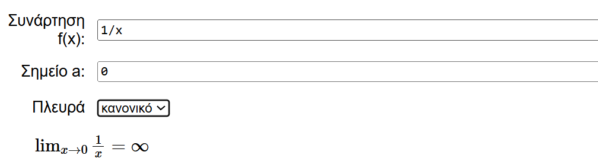
Διαδραστική κατασκευή για την εύρεση ορίων
Παράδειγμα διαγράμματος με βέλος για επεξήγηση. Το p3 είναι το άθροισμα των καμπυλών.
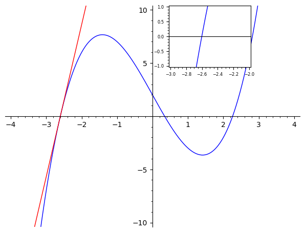
Παράδειγμα επεξηγητικού διαγράμματος μέσα σε άλλο.
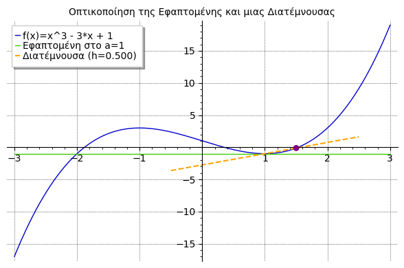
Ερμηνεία παραγώγου (η κλίση της γραφικής παράστασης)
Ερμηνεία παραγώγου σε πίνακα από γραφικές παραστάσεις
Κινούμενες εικόνες για οπτική παράσταση της ταχύτητας (δεξιά) ενός κινητού (αριστερά)
Γραφική παράσταση επιπέδου στον χώρο με την implicit plot
Γραφική παράσταση επιπέδου στον χώρο με την parametric plot
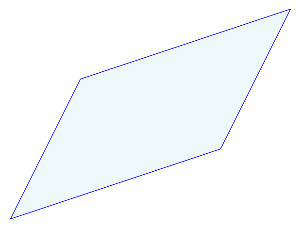
Πως σχεδιάζουμε παραλληλόγραμμα στο sagemath όπως τούτο; (απάντηση: δείτε παρακάτω)
Εύκολος σχεδιασμός πλευρών παραλληλογράμμου με χρήση της πρόσθεσης διανυσμάτων
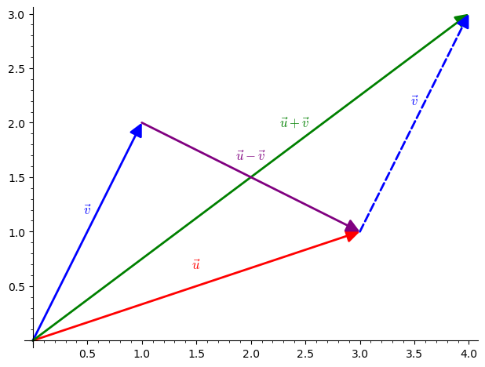
Πρόσθεση και αφαίρεση διανυσμάτων
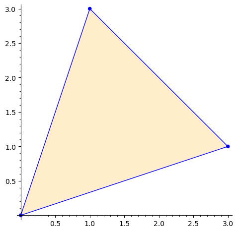
Οδηγίες για σχεδιασμό επίπεδων τριγώνων
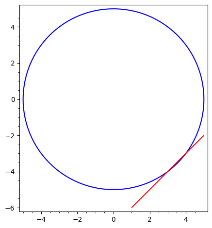
Οδηγίες για σχεδιασμό κύκλων και εφαπτομένων
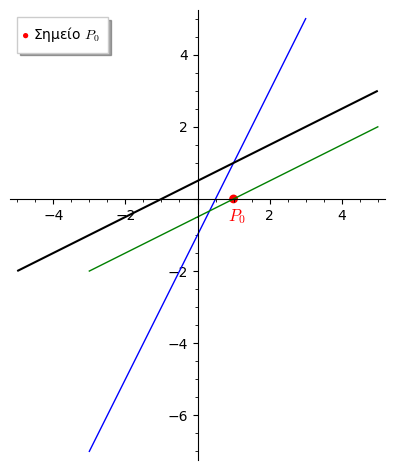
Οδηγίες για σχεδιασμό ευθειών του επιπέδου

Ενα project για την διδασκαλία της τριγωνομετρίας
Γραφικός υπολογισμός του εμβαδού κάτω/πάνω από την καμπύλη του ημιτόνου
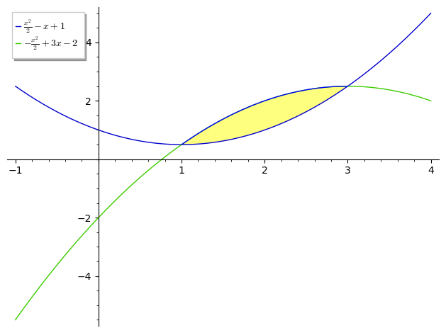


Σχεδιασμός του εμβαδού του χωρίου μεταξύ δυο καμπυλών/div>
polarplot:Σχεδιάζοντας ημικύκλια σε πολικές συντεταγμένες
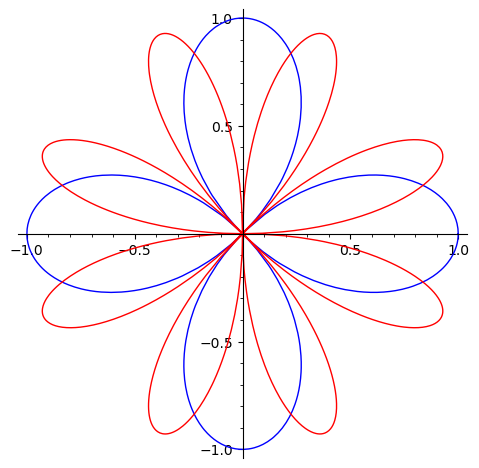
polarplot:Σχεδιάζοντας κινούμενα πέταλα με πολικές
Απλό παράδειγμα γραμμικής παλινδρόμησης
Ιστογράμματα με SageMath. Κάποια προβλήματα στην εμφάνιση
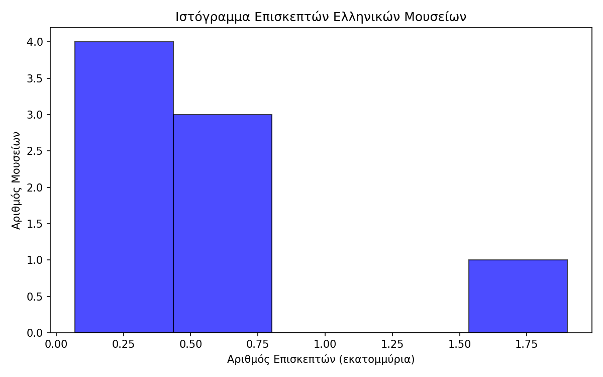
Ιστογράμματα με εργαλεία Python. (Καλύτερο αποτέλεσμα!)
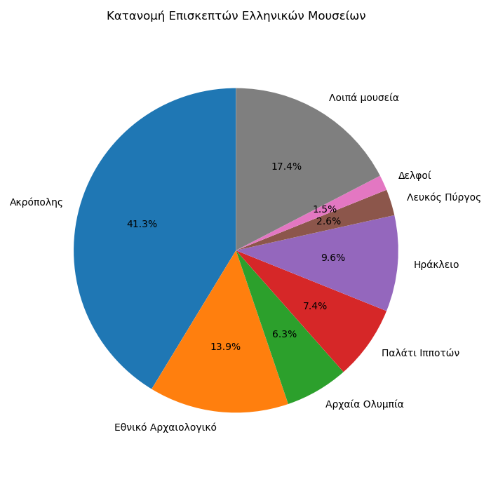
Σχεδιασμός πίτας με εργαλεία Python.
Συνδυασμός Scatter plot και List plot
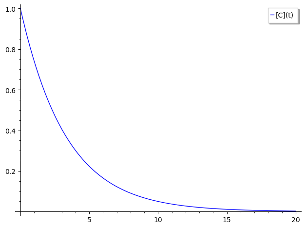
Γραφική παράσταση εκθετικής και μετατροπή της σε (δείτε παρακάτω)
γραφική παράσταση ημιλογαριθμικής
Παράδειγμα με slider (σύρτη). Μετακινούμε τον σύρτη και αλλάζουμε την θέση του κινητού. Στα δεξιά βλέπουμε ταυτόχρονα την ταχύτητά του.
Προσομοίωση σύγκρουσης δυο ίδιων ημιτόνων που κινούνται αντίθετα επί ευθείας.
Πανεύκολη προσομοίωση της παραπάνω σύγκρουσης.
Παράδειγμα συμβολής κυμάτων στο επίπεδο
Κατασκευή βίντεο για την οπτικοποίησης της συμβολής
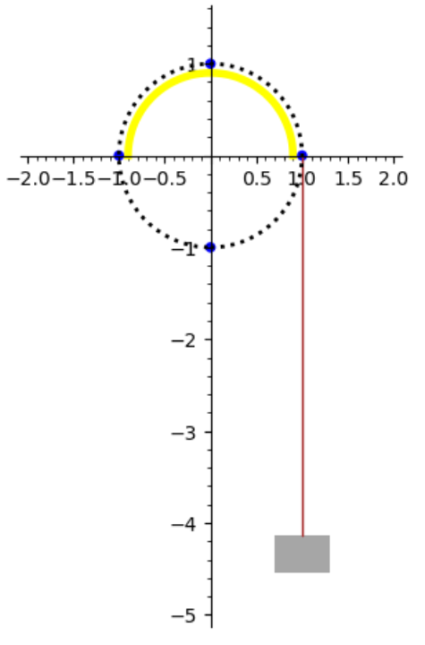
Ασκήσεις στην Φυσική με τροχαλία
Οπτική λύση συστήματος δυο ανισώσεων
table: Όμορφος σχεδιασμός ενός πίνακα από δεδομένα
Εξήγηση της έννοιας της παραγώγου με κίνηση
Γραφική παράσταση κίνησης κινητού: σχέση ταχύτητας με επιτάχυνσης
Πανεύκολη απόδειξη Θεωρήματος Θαλή με διανύσματα
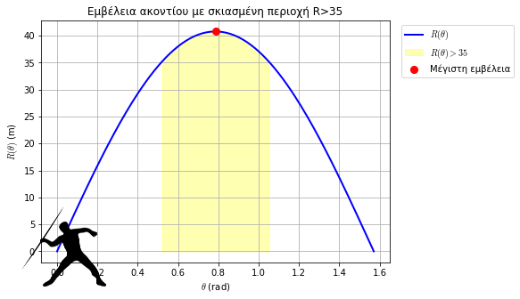
Ρίψη ακοντίου ως πρόβλημα μεγιστοποίησης του βεληνεκούς R(θ).